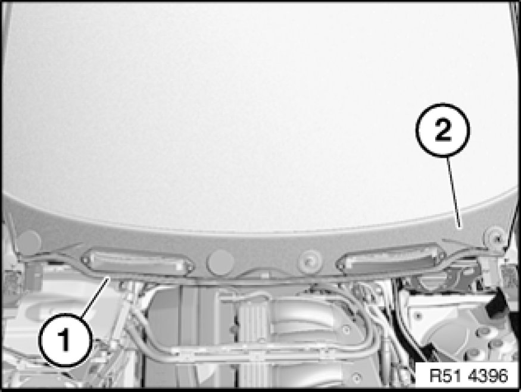
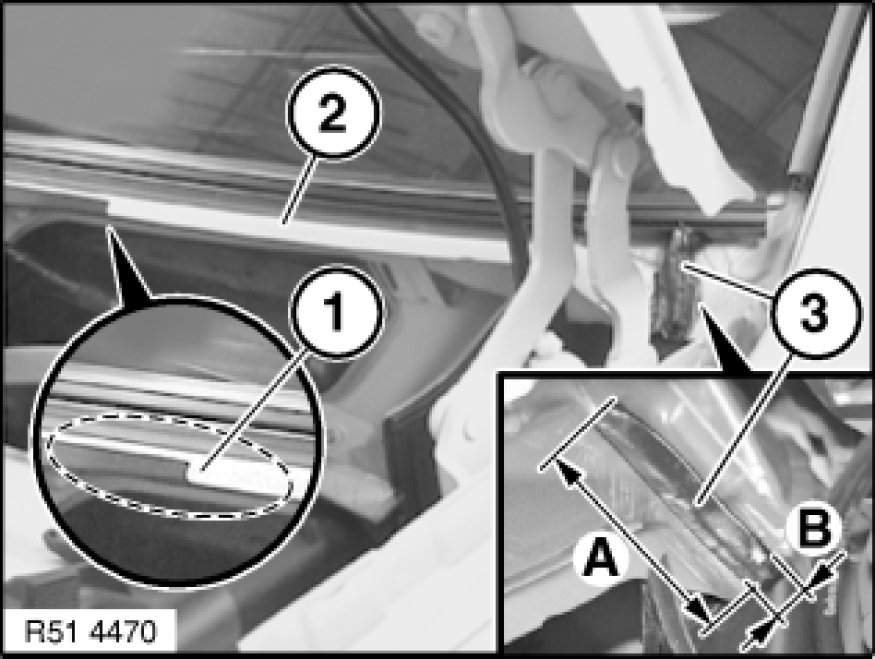
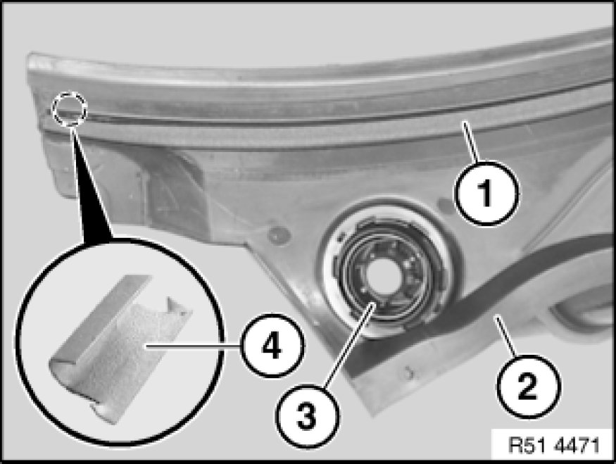
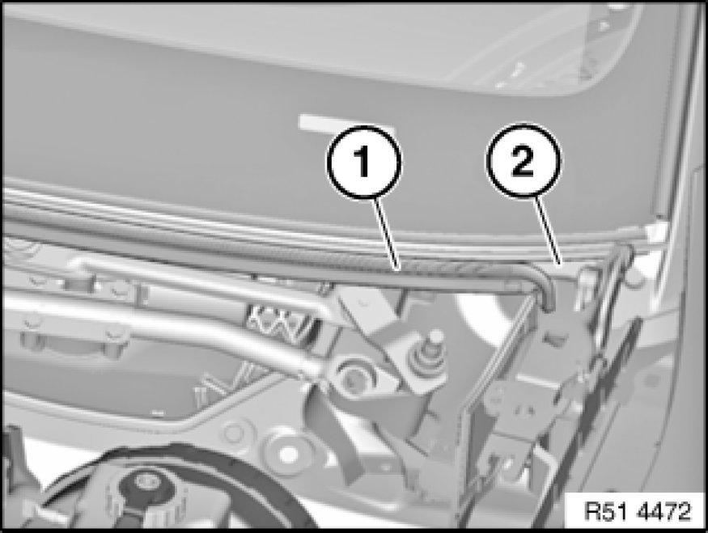

Cowl Moulding / Trim: Service and Repair
51 13 115 - Removing and installing / replacing cowl panel cover

Necessary preliminary tasks:
- Remove windscreen wiper arm Service and Repair on left/right
- Remove microfilter housing 64 31 092 Removing and Installing/Replacing Microfilter Housing (Lower Section)

Important!
Danger of water ingress via fan into vehicle interior if cowl panel cover is not correctly fitted.
Build date up to approx. 09/2004:
Butylene tape must be fitted on left and right. Sealing foam on cowl panel cover must be fitted (see Figs. R51 4470 and R51 4471).
Build date from approx. 09/2004:
Only sealing strip on cowl panel sheet metal flange must be fitted (see Fig. R51 4472).

Release mucket (1).
Remove cowl panel cover (2) in upwards direction.
Build date up to 09/2004 with butylene tape:
Installation:
If necessary, snap cover (2) on left and right correctly against resistance of butylene tape into retaining strip (water ingress).

Build date up to approx. 09/2004:
Installation:
For build date with opening (1) in flange (2), butylene tape (3) must be fitted on left and right (water ingress).
Lay 6 mm dia. butylene tape* twice on top of each other and shape into a trapezoid so that butylene tape has length "A" and height "B".
A= - 66 ± 2 mm
B= - 12 mm
Butylene tape (3)* must be stuck on up to windscreen cement bead.
If necessary, slide butylene tape (3)* between retaining strip and windscreen cement bead.
* Sourcing reference: BMW Parts Service

Note:
If retainer (4) has been fitted up to five times, retaining strip on windscreen Removing and Installing/Replacing Retaining Strip for Cowl Panel Cover and cowl panel cover must be replaced.
Installation:
For build date with opening on flange (see Fig. R51 4470), sealing foam (1) must be fitted on cowl panel cover (2) (water ingress).
Guide (3) must snap audibly into place in wiper console.
Guide (3) must not be damaged (water ingress).

Build date from approx. 09/2004:
Installation:
For build date without opening on flange (see Fig. R51 4470), sealing foam and trapezoidal butylene tape must not be fitted (water ingress).
Sealing foam and trapezoidal butylene tape can be fitted up to build date 11/2004.
If necessary, remove trapezoidal butylene tape and sealing foam from cowl panel cover/body.
Sealing strip (1) must be fitted on cross-member (2) (water ingress).
If necessary, retrofit sealing strip (1).